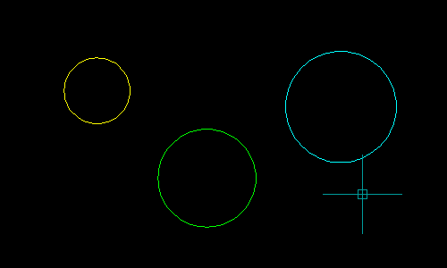

Associative Centerlines
This page is delivered for consistency purposes only, as part of the LeeMac sample module of DynALisp, which shows how DynALisp turns existing AutoLISP programs into a module. The program and its description are the work of Lee Mac, who keeps all the credit for them. The original page, with the latest version, is on Lee Mac's website: https://lee-mac.com/associativecenterlines.html
| Function Syntax | LM-AssociativeCenterline – original syntax: CL / CLRemove (see aliases) |
| Current Version | 1.0 |
| Compatible with AutoCAD for Mac? | No |
| Compatible with AutoCAD LT? | Yes |
| Original Page | lee-mac.com/associativecenterlines.html |
Program Description
This reactor based program enables the user to create associative circle centerlines which will automatically update following modification of the associated circle.
Upon calling the program with 'ACL' at the AutoCAD command-line, the user is prompted to make a selection of circles for which to create associative centerlines.
For each set of circle and centerlines, the program uses two Object Reactors to monitor modification events for both the circle object and pair of centerlines. Upon modification of the circle, the associated centerlines are moved or scaled accordingly to remain in the correct position.
The pair of centerlines are also monitored for modification using an Object Reactor, however, following modification of such lines, the callback function for the Object Reactor cannot be used to reposition the lines since this would trigger a recursive evaluation of the same callback function, and the program would take a dive into a recursive black hole, eventually resulting in a stack overflow.
To avoid the recursive call, the Object Reactor is temporarily disabled following the centerline modification event and a Command Reactor is created to detect the event of the command completion. When the active command is completed, the centerlines are updated, Command Reactor disabled and Object Reactor re-enabled.
The handles of the centerlines are stored in the associated circle entity XData, and similarly the handle of the circle is stored in the line entity XData of both centerlines. This enables the program to rebuild the reactors upon loading, allowing retention of the centerline associativity between drawing sessions.
The user can remove the centerline associativity at any time by typing 'CLRemove' at the AutoCAD command-line and selecting circles with associative centerlines.
Program Preview

Bundled program notes
;;--------------=={ Associative Centerlines }==---------------;;
;; ;;
;; Uses reactors to update centerlines following ;;
;; modification of associated circles. Stores entity handles ;;
;; in entity xData to enable reactor rebuild upon loading, ;;
;; allowing retention of associativity between sessions. ;;
;;------------------------------------------------------------;;
;; Author: Lee Mac, Copyright © 2011 - www.lee-mac.com ;;
;;------------------------------------------------------------;;
;; Version 1.0 - 12-05-2011 ;;
;;------------------------------------------------------------;;
Command Names And Aliases
As in every DynALisp module, each program of this sample module has one main command, named LM-*, and the original command names of Lee Mac's page are kept as its aliases: they run the same command, and can be added, renamed or removed in Dyl-Suite (saved in Resources\Aliases.csv). The rows marked ↳ are child commands of LM-AssociativeCenterline: they are run by their alias, or picked from LM-AssociativeCenterline when it lists them (their command is named Pst-*).
| Command | Aliases | Name |
|---|---|---|
| LM-AssociativeCenterline | ACL | Associative Centerline |
| ↳ CLREMOVE | – | Remove Associative Centerline |